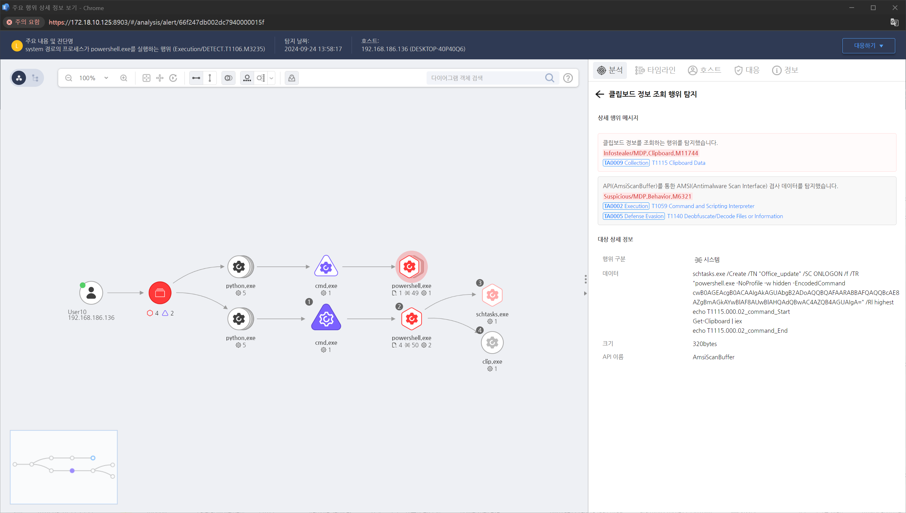

MITRE ATT&CK 액션을 기준으로 대응 방안을 작성
프로세스 실행 인자 모니터링를 통해 “Get-Clipboard” 명령 행위를 탐지합니다.

공격자가 클립보드 데이터를 수집하는 활동을 추적하기 위해 시스템 이벤트 로그나 보안 로그를 분석합니다.
클립보드 데이터에 접근하거나 이를 수집한 프로세스를 식별하기 위해 메모리 포렌식 또는 프로세스 모니터링 도구를 사용합니다.
클립보드에 접근하려는 활동을 실시간으로 모니터링하고, 이를 감지할 수 있는 알림을 설정합니다.
클립보드 데이터를 수집하는 것으로 의심되는 악성 프로그램이나 프로세스가 발견되면 이를 시스템에서 제거합니다.
클립보드 데이터 수집과 관련된 악성 활동을 추적하고, 공격자가 클립보드에 접근한 방법을 분석합니다.
클립보드 데이터를 수집한 후 공격자가 외부로 유출하려는 시도를 실시간으로 감지하고 차단합니다.
클립보드 데이터에 접근한 사용자의 계정 활동을 조사하고, 해당 계정의 권한이나 행동에 이상이 없는지 확인합니다.
클립보드 데이터 유출과 관련된 악성 소프트웨어가 설치된 경우, 시스템을 포맷하거나 클린 이미지를 재설치하여 시스템을 복구합니다. 공격의 영향이 미친 다른 시스템도 점검하고 복구합니다.
클립보드 데이터 유출이 발생한 시스템이 네트워크를 통해 공격자에게 연결된 경우, 해당 네트워크 세그먼트를 일시적으로 격리하여 추가적인 유출을 차단합니다.
원격 데스크탑 사용 제한
모니터링 및 로깅 강화
사용자 교육
멀티팩터 인증
응용 프로그램 화이트리스트
보안 소프트웨어 사용
Action 실행시 함꼐 영향을 받는 다른 Techniqes
| ATT&CK |
|---|
| T1115.000 |
| D3FEND |
|---|
| D3-FIM File Integrity Monitoring |
| D3-SCA System Call Analysis |
| D3-FA File Analysis |